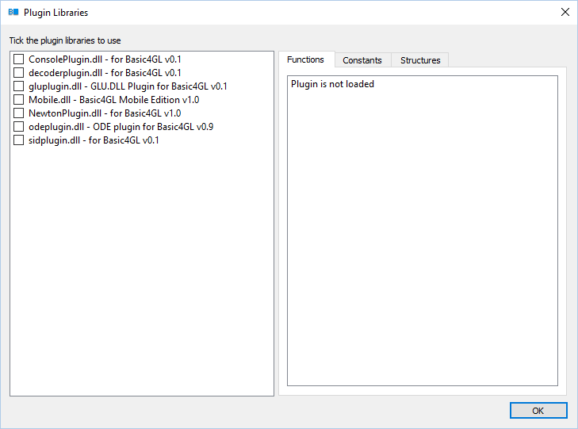

Basic4GL, Copyright (C) 2003-2016 Tom Mulgrew
Plugin Libraries
01-May-2016
Tom Mulgrew
Plugin libraries extend Basic4GL adding new commands to enable Basic4GL to do new things.
They are distributed as Windows DLL files, which you drop into the Basic4GL installation folder.
Anyone with a reasonable grasp of C/C++ can create a Basic4GL plugin and distribute it to other Basic4GL users.
The Basic4GL plugins section contains plugin libraries created by Basic4GL users - most of them are in fact created by DJLinux.
People often announce their plugin libraries in the Basic4GL discussion forum as well.
To use a plugin library, first download the DLL file (and any other files it requires) and place it in the Basic4GL program folder (the one that contains Basic4GL.exe).
Then run Basic4GL and click "Program|Plugin Libraries..." to bring up the plugin libraries dialog.
Tick the plugin library or libraries that you wish to use with your program, then click "OK".
The plugins will be loaded, and the new commands will be available to your Basic4GL program.
The plugin libraries dialog also shows you the functions, constants and structures that the plugin introduces.
These are displayed in the tabs on the right hand side for the currently selected plugin on the left. Note that you must load the plugin first (by ticking it) before you can see what it contains.
Although the plugin library dialog shows you the functions contained in the library, it does not tell you what they are for or how they are intended to be used.
For this you should look for documentation released along with the plugin, or contact the plugin author.
If you create a standalone exe of a Basic4GL program that uses plugin libraries, then you must distribute those DLLs (and any other DLLs or files that they use) along with your standalone executable.
You are also responsible for determining and adhering to any licensing restrictions that apply to the plugin libraries.
Basic4GL plugin DLLs can be potentially unsafe.
Basic4GL is designed to be a safe language, and every attempt is made to ensure it is stable, and that a malicious Basic4GL program (whether written deliberately or accidentally) will not damage your system (unless you turn off safe mode).
However, plugin DLLs are written in C/C++ and can interact directly with your system. Basic4GL cannot restrict what a plugin DLL does. If a plugin allows overwriting files in your system directory, then someone could use it to write a Basic4GL program that does exactly that.
You should be aware of the following risks:
A plugin author could deliberately create a malicious plugin that deliberately damages your system (deletes important files etc).
A plugin author could accidentally introduce a bug that damages your system, or make Basic4GL unstable.
Plugins can enable powerful commands, which if used incorrectly could damage your system, or make Basic4GL unstable.
Ultimately it is your responsibility to determine whether you trust the author's intentions and programming ability, and whether you are confident you understand how to use it correctly.
As far as I'm aware, all plugins downloadable from the Basic4GL plugins section are non-malicious, and free of potentially destructive bugs. However some do introduce powerful Windows commands, and must be used correctly.
Plugin libraries are DLL files created in C++.
You need to be reasonably confident at writing C/C++ code and building and linking DLLs.
You also need a C++ compiler. The Basic4GL plugin DLL SDK contains a project for Visual C++ 2013 (which can be used with Visual Studio 2013 Community edition). Other C++ compilers can be used, but you will need to create and configure the project yourself.
The Basic4GL plugin SDK is available from the Basic4GL downloads page.
Further instructions are provided in the SDK source code.